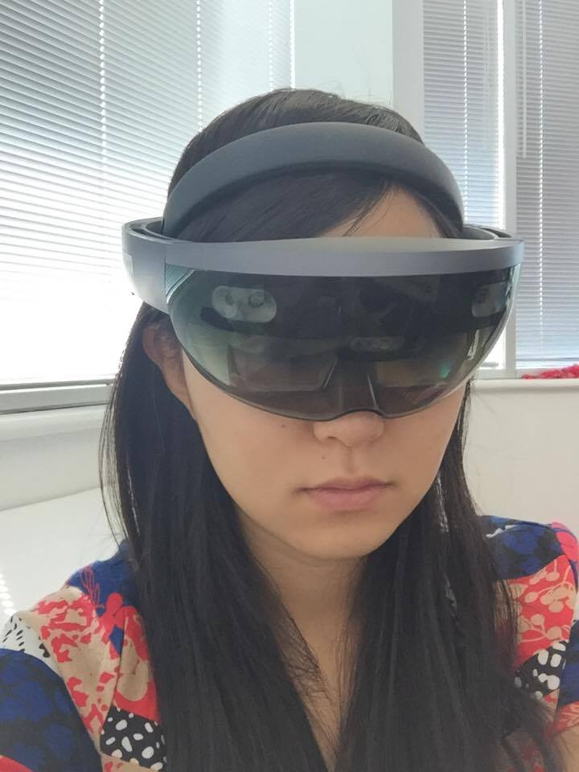
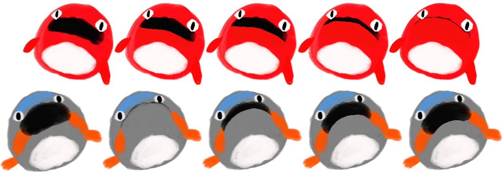
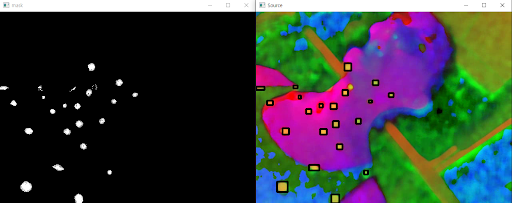
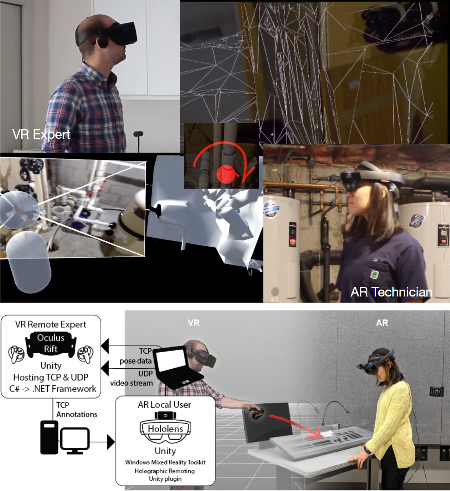
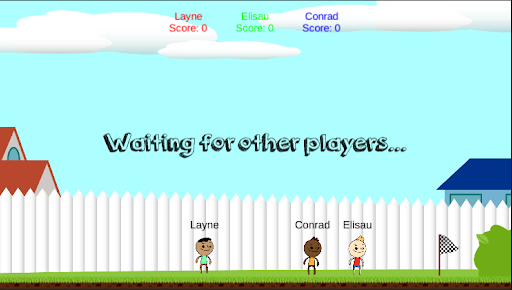
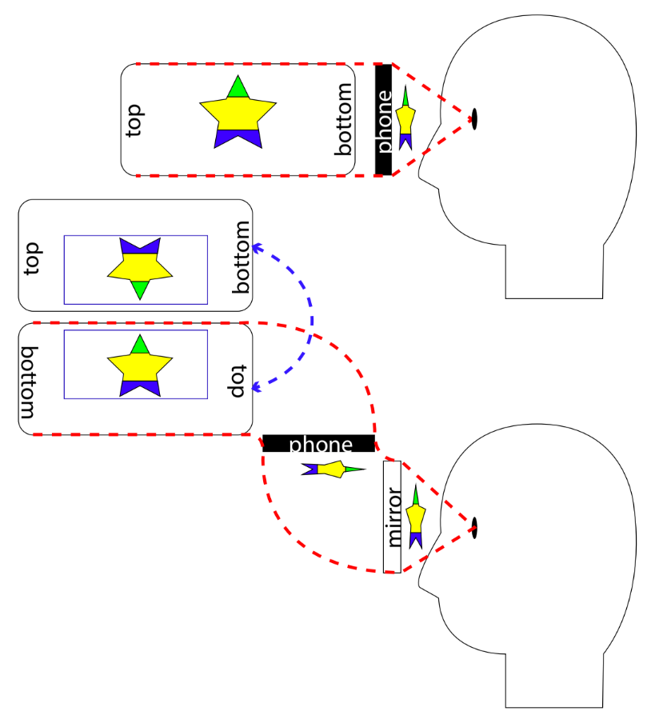
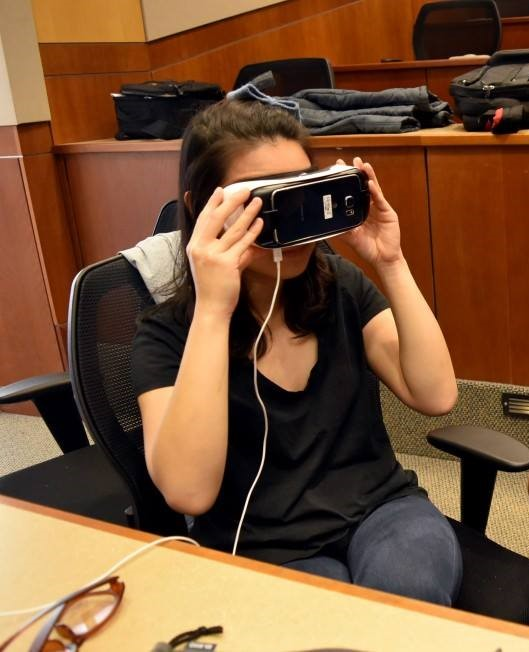
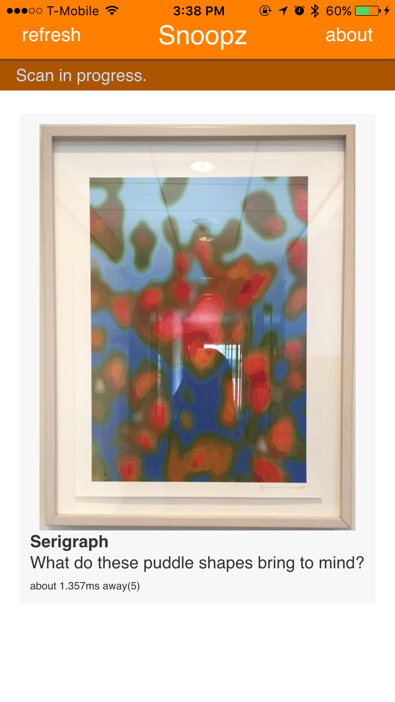
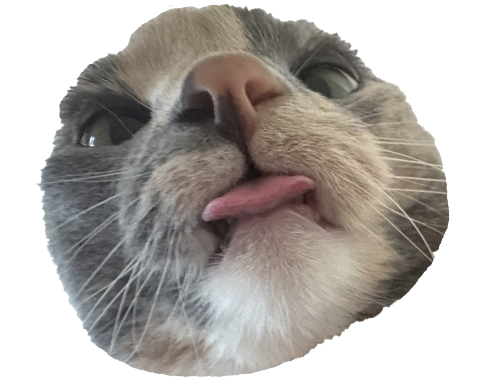

My name is Hyerin Seok, pronounced like the bird heron.
I'm a Design forward Software Developer in the San Francisco Bay Area.
I'm a creative coder, gamer, artist, cat mom and passionate about creative technology.
My experience lies in HCI concepts in UI/UX Prototyping, Spatial Computing, Mixed Reality, Game Dev, Web
I am a problem solver, bridging the gap between the artist and engineer.
Below are some of my projects!
Currently participating in a volunteer project called Museum of Science Fiction, as a Senior Virtual Reality Developer, creating an interactive navigation system in Unity.
Museum of Science Fiction

Fishing Pals is an idle incremental fishing game inspired by the classic Let’s Go Fishing toy. Players fish from a swirling whirlpool filled with colorful, animated fish that pop in and out of the water. The game combines nostalgia with modern idle mechanics and progression systems. Techstacks include Godot Engine with gdscript.

Project consulting aiding a research project. OpenCV + Python to compute hdf5 files
App for viewing 3D models of products for retail store ipad devices. Built in Spark AR.
I designed this sample prototype app for showcasing AR Media Texture feature in Spark AR Studio. I used AR occlusion technique with a Video texture instead of Image to create an optical illusion.
During my time at Meta, I worked on a lot of projects involving object detection in AR with computer vision, in many different devices including HMDs and Mobiles. Here are some of my prototype examples.
Take home AR interaction assignments for Meta Reality Lab using Spark Studio with Javascript.

This project investigates the combination of virtual and augmented reality to support communication between two distant parties, such as an expert technician guiding a less experienced repairman in the field. The accompanying video illustrates how the technology works.
CU Atlas - ARRA

Built in Unity 2D, I worked on asset creation and animation.
Itch.io page
Inspired by Gianni Colombo’s concept of “elastic space”, we technologically stretched environments across distances and built multiple working interfaces that communicate across time and space. Concept for this tangible interface was a smart bookmark Used Arduino Circuit Playground integrated with conductive paper to create a raw working prototype Allowed users to digitally share their reading pace

Enabled users to draw in AR space, using a Lenovo Mirage AR headset coupled with a phone acting as a screen Qualisys motion capture system paired with Bluetooth controllers for user motion and Input
Augmented reality project involving interaction with a 3D engine model to educate DoD military mechanics Using Unity, Microsoft Hololens, and Mixed Reality Toolkit, enabled users to move, drag, rotate, zoom, and separate engine components using hand gestures and voice commands

Research project assessing motion sickness in VR, AR and MR, and to gauge the effectiveness of an XR environment as a motivator for exercise. Using Samsung GearVR headset paired with a phone, user was to exercise on a stationary machine Environment transitions from AR to VR in an attempt to mitigate motion sickness OpenCV used with phone’s camera to track head movement via referencing known object

Built a cross-device mobile app using cordova, that connects users phones to museum artifacts with bluetooth beacons.
